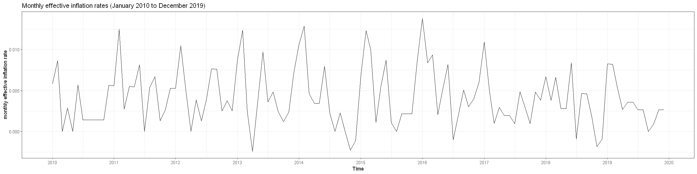
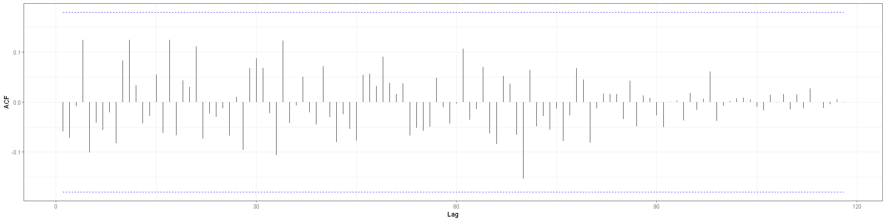
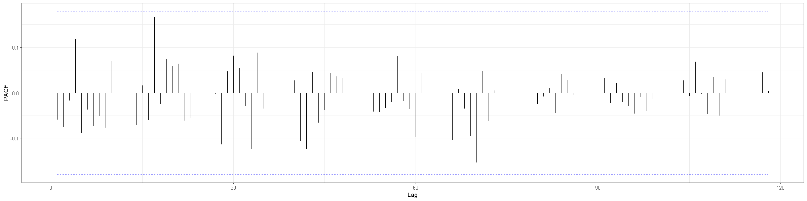

Inflation Model
Contents
1.3.1. Inflation Model#
1.3.1.1. Packages#
# install.packages('ggplot2')
# install.packages('scales')
# install.packages('ggfortify')
library(TSA)
library(ggplot2)
library(ggfortify)
library(scales)
theme_set(theme_bw())
Attaching package: 'TSA'
The following objects are masked from 'package:stats':
acf, arima
The following object is masked from 'package:utils':
tar
1.3.1.2. Data#
# function to convert string date to year month vector
year_mon <- function(string_date){
year <- as.integer(substr(string_date, start = 1, stop = 4))
mon <- as.integer(substr(string_date, start = 6, stop = 7))
return(c(year, mon))
}
raw.intdata <- read.csv("IRLTLT01ZAM156N.csv")
raw.infldata <- read.csv("ZAFCPIALLMINMEI.csv")
bond_term <- 10
start_date <- "2010-01-01"
end_date <- "2019-12-01"
start_index_int <- which(raw.intdata$DATE==start_date)
end_index_int <- which(raw.intdata$DATE==end_date)
start_index_infl <- which(raw.infldata$DATE==start_date)
end_index_infl <- which(raw.infldata$DATE==end_date)
int_data <- matrix(c(raw.intdata[start_index_int:end_index_int, "IRLTLT01ZAM156N"],
rep(bond_term, length(start_index_int:end_index_int))), ncol=2)
# monthly effective interest rates
int_series <- ts((1+int_data[, 1]/100)^(1/12)-1,
start = year_mon(start_date), frequency=12)
# monthly effective inflation
infl_data <- c(raw.infldata$ZAFCPIALLMINMEI[-1]/
raw.infldata$ZAFCPIALLMINMEI[-nrow(raw.infldata)])-1
infl_series <- ts(infl_data[start_index_infl:end_index_infl],
start = year_mon(start_date), frequency=12)
options(repr.plot.width=20, repr.plot.height=5)
(infl_plot <- autoplot(infl_series)+
ggtitle("Monthly effective inflation rates (January 2010 to December 2019)") +
ylab("monthly effective inflation rate") +
xlab("Time") +
scale_x_date(breaks = breaks_pretty(10)))

create_lagged_dataframe <- function(int_series, infl_series, int_lags, infl_lags){
n <- length(int_series)
max_lag <- max(c(int_lags, infl_lags))
ncols <- length(int_lags) + length(infl_lags)
nrows <- length(int_series) - max_lag
datfram <- as.data.frame(matrix(nrow=nrows, ncol=ncols))
k = 0
for (i in infl_lags){
datfram[, k+1] <- infl_series[(max_lag-i+1):(n-i)]
colnames(datfram)[k+1] <- paste0("infl.l", as.character(i))
k <- k + 1
}
for (i in int_lags){
datfram[, k+1] <- int_series[(max_lag-i+1):(n-i)]
colnames(datfram)[k+1] <- paste0("int.l", as.character(i))
k <- k + 1
}
return(datfram)
}
1.3.1.3. Model#
1.3.1.3.1. Fit Linear Regression#
lagged_datfram <- create_lagged_dataframe(int_series, infl_series, c(0:1), c(0:1))
lagged_datfram_interact <- as.data.frame(model.matrix(~-1 + ., lagged_datfram))
reg_model <- lm(infl.l0 ~ -1 + ., data = lagged_datfram_interact)
summary(reg_model)
Call:
lm(formula = infl.l0 ~ -1 + ., data = lagged_datfram_interact)
Residuals:
Min 1Q Median 3Q Max
-0.0058332 -0.0023030 -0.0004531 0.0023509 0.0074865
Coefficients:
Estimate Std. Error t value Pr(>|t|)
infl.l1 0.28748 0.08694 3.307 0.00126 **
int.l0 4.27180 1.57703 2.709 0.00778 **
int.l1 -3.84328 1.57740 -2.436 0.01635 *
---
Signif. codes: 0 '***' 0.001 '**' 0.01 '*' 0.05 '.' 0.1 ' ' 1
Residual standard error: 0.00331 on 116 degrees of freedom
Multiple R-squared: 0.637, Adjusted R-squared: 0.6276
F-statistic: 67.85 on 3 and 116 DF, p-value: < 2.2e-16
1.3.1.3.2. Fit ARIMA model on regression errors#
arima_model <- arima(reg_model$residuals, seasonal = list(order=c(1, 0, 1), period=12), include.mean = FALSE)
arima_model
Call:
arima(x = reg_model$residuals, seasonal = list(order = c(1, 0, 1), period = 12),
include.mean = FALSE)
Coefficients:
sar1 sma1
0.8904 -0.5390
s.e. 0.0706 0.1463
sigma^2 estimated as 6.45e-06: log likelihood = 538.6, aic = -1073.2
1.3.1.3.3. Residual Analysis#
options(repr.plot.width=12, repr.plot.height=6)
#plot(residuals(infl_model), type="l")
res_hist <- ggplot() + geom_histogram(aes(residuals(arima_model)), binwidth = 0.001) +
xlab("Residuals")
res_qqnorm <- ggplot() + stat_qq(aes(sample=residuals(arima_model)))
gridExtra::grid.arrange(res_hist, res_qqnorm, ncol=2, nrow=1)
Don't know how to automatically pick scale for object of type ts. Defaulting to continuous.
Don't know how to automatically pick scale for object of type ts. Defaulting to continuous.
options(repr.plot.width=20, repr.plot.height=5)
autoplot(acf(residuals(arima_model), lag.max = 200, plot=FALSE))
autoplot(pacf(residuals(arima_model), lag.max = 200, plot=FALSE)) + ylab("PACF")


1.3.1.4. Save Model#
reg_errors <- reg_model$residuals
n <- length(reg_errors)
reg_errors <- as.numeric(reg_errors[(n-11):n])
arima_errors <- arima_model$residuals
m <- length(arima_errors)
arima_errors <- as.numeric(arima_errors[(m-11):m])
param = list("beta" = reg_model$coefficients, "reg_errors" = reg_errors, "Phi" = arima_model$coef["sar1"], "Theta" = arima_model$coef["sma1"], "sigma" = sqrt(arima_model$sigma2), "arima_errors" = arima_errors, "end_value" = infl_series[length(infl_series)])
# save(param, file = "inflation_param.RData")